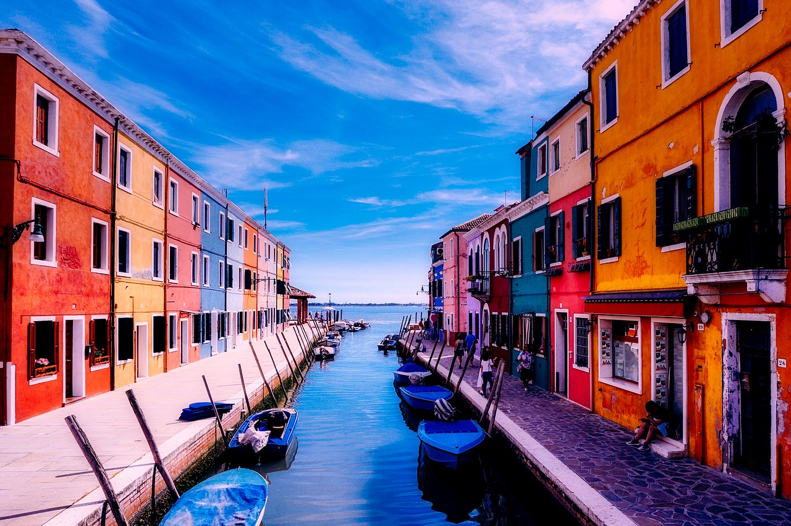
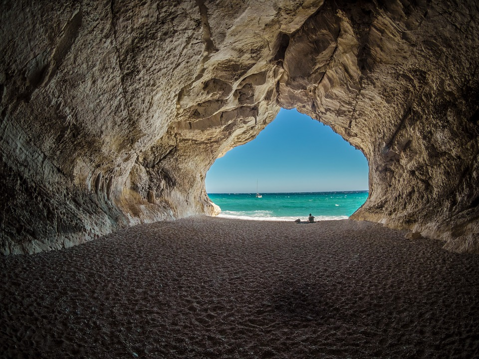
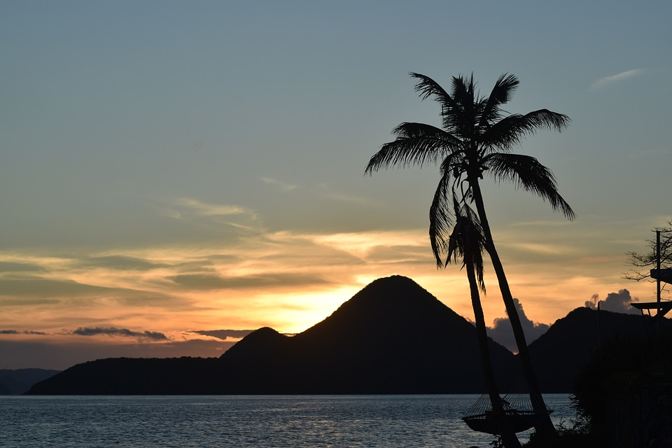
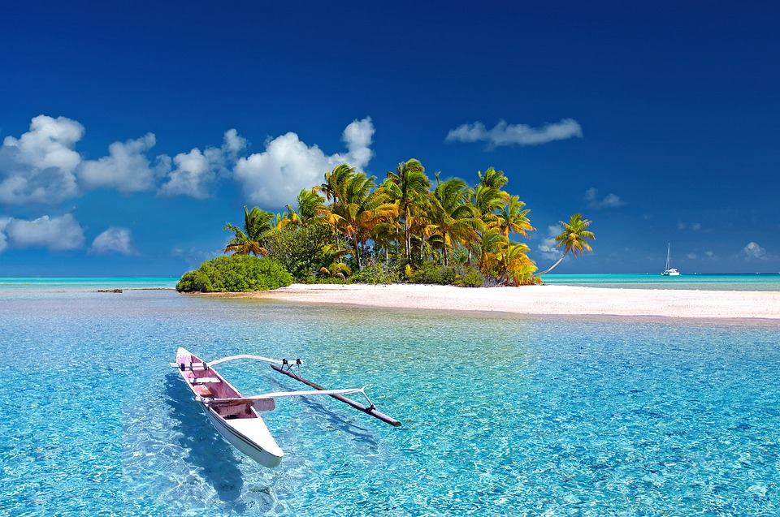
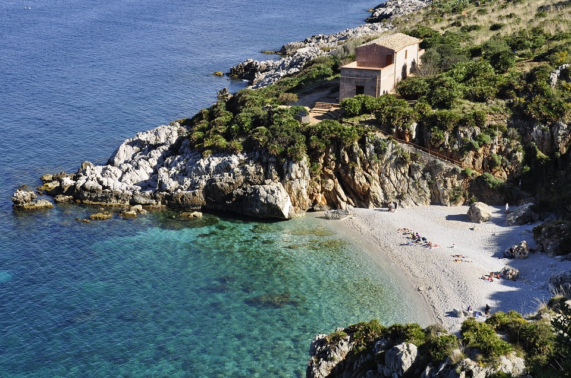

{kind=link}
Venez visiter "les Grenadines", un archipel du Sud des Antilles, dans la mer des Caraïbes.
Profitez en pour y faire de la voile, et admirez les tortues de mer au sanctuaire "Old Hegg Turtle Sanctuary",sur l'ile de Bequia !

Le NIRVANA
Découvrez nos destinations
Sauvage, exotique et distant,
cosmopolite et avant-gardiste,
intacte et tranquille,
découvrez nos incroyables destinations de voile.
Vous allez voir le monde ... Différemment!
___________________________________________________________________

- 
- 
- 
- 
- 
{kind=link}
{kind=link}
{kind=link}
Allez en "Sardaigne". C'est une grande île italienne de la mer Méditerranée, qui compte près de 2 000 km de côte.
Elle comporte des plages de sable et un intérieur montagneux traversé par des sentiers de randonnée. Son paysage escarpé est parsemé de milliers de nuraghes, mystérieuses ruines en pierre datant de l'âge de bronze qui ressemblent à des ruches.
{kind=link}
Visitez la "Sicile", plus grande île de la mer Méditerranée.
La richesse de son histoire se reflète dans des sites comme la vallée des temples, les ruines bien conservées, et les mosaïques byzantines de la chapelle palatine. Vous pouvez aussi aller voir à l'est de la Sicile l'Etna, l'un des volcans actifs les plus élevés d'Europe.
{kind=link}